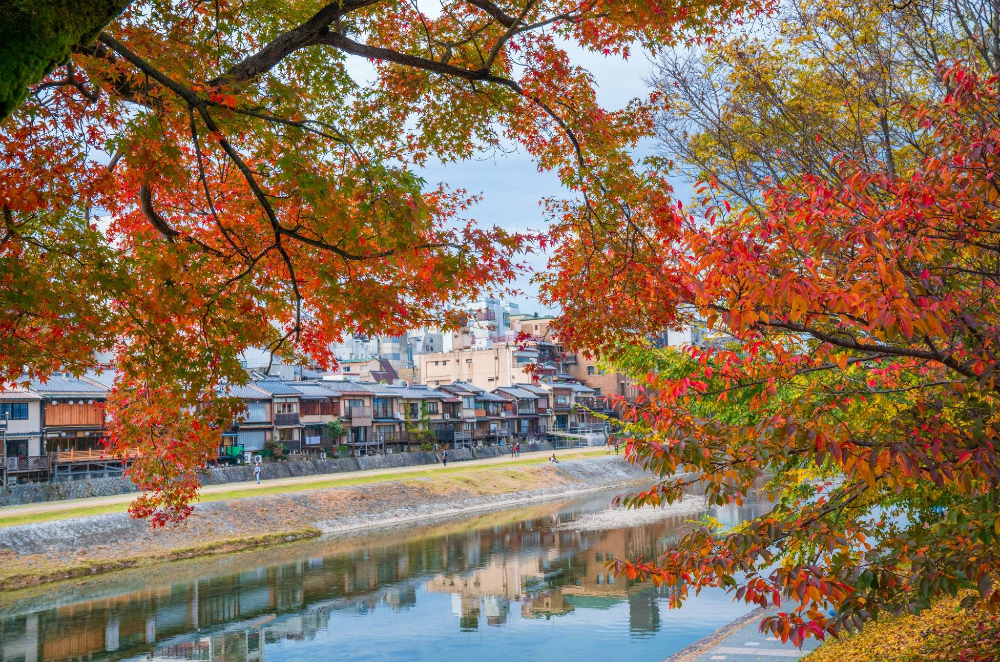
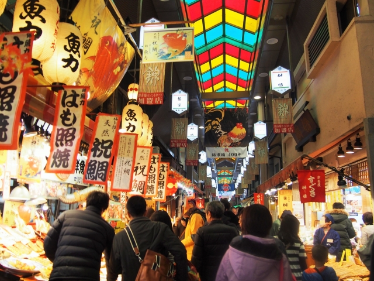

Not just the sights. The story between them.
From Arashiyama's bamboo to shogun history, Nishiki Market and the old lanes of Gion, let Ben shape a day that feels personal, unhurried and truly Kyoto.

A day made around you.
A suggested route begins early in Arashiyama, continues through Kyoto's samurai-era history, takes a pause at Nishiki Market and finishes near Gion. The plan changes with the season, crowd levels, mobility and what you love most.
Ben lives in Arashiyama and brings both historical context and a photographer's eye to your day. Optional candid portraits, kimono experiences, tea ceremony visits and restaurant recommendations can be discussed in advance.

Questions about your private day
Can we customize the route?
Yes. Tell Ben what interests you, your pace and any dietary or mobility needs when requesting a date.
Is a private car included?
No car is included in the standard guiding rate. Walking, public transport or taxis are typical; a private driver can be discussed and quoted separately.
How do we reserve?
Submit your preferred date and group size. Ben checks availability and confirms your itinerary, inclusions and price before sending a secure payment link.
Is professional photography available?
Yes. Ben can offer natural candid photographs and portraits. Please ask for the exact image count, editing scope and price in your quote.